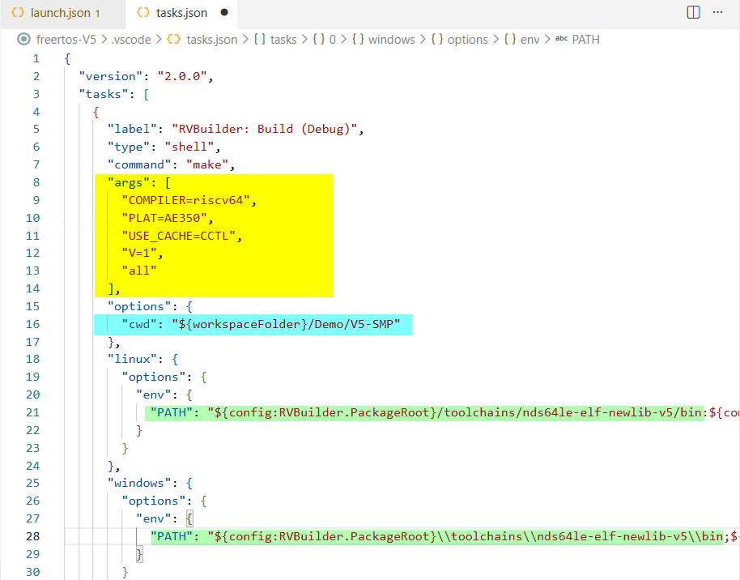
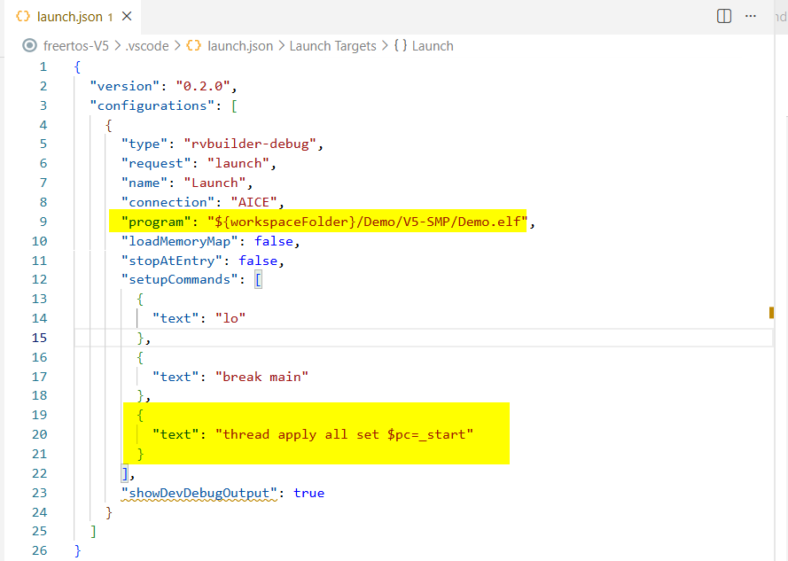

Tutorials with Demo Applications
The RVBuilder package provides two demo applications, demo-plic-novector-V5 and freertos-V5, to demonstrate the development workflows with RVBuilder in VS Code. For detailed descriptions of their demo scenarios, see Demo Applications.
The two demos are executed in a similar manner, but they use different approaches to manage build and debug configurations.
- The
demo-plic-novector-V5project uses the RVBuilder-generated Makefile, allowing build and debug settings to be managed directly through the RVBuilder's Project Settings interface. - The
freertos-V5project uses a custom Makefile and requires manual modification of the workspace configuration files (tasks.jsonandlaunch.json) for the build and debug process.
The following sections use the two demo applications to illustrate the typical development workflows with RVBuilder.
Development Workflow with RVBuilder-Generated Makefile
The demo-plic-novector-V5 project is used here to demonstrate the development workflow for projects that use a Makefile generated by RVBuilder.
Import a Demo Project
- Click on the Activity Bar to open the RVBuilder view and click Home.
- Click Demo Projects... on the RVBuilder Home page.
- On the opened dialog, select the
demo-plic-novector-V5project and click Import. - See the demo project in the Explorer view.
Configure and Build the Project
- Right-click the project in the Explorer view and select "RVBuilder: Build Project".
- In the Project Settings, select a chip profile and a connection type that correspond to your target system and target environment.
- Ensure the option "Use RVBuilder-Generated Makefile" is checked and specify respective build settings as needed.
- Click the Build button to build the application.
- Verify the program executable
demo-plic-vector-V5.adxis generated in the project.
Run or Debug the Project
- Right-click the project in the Explorer view and select "RVBuilder: Debug".
- In the command palette, select the launch configuration for
demo-plic-novector-V5. - The debug session starts. Use the Debug Toolbar to control program execution.
- Inspect the program runtime data and target status, such as variable values and CPU register values, in the Run and Debug view.
Development Workflow with Custom Makefile
The freertos-V5 project is used here to demonstrate the development workflow for projects that use a custom Makefile. Note that the project includes two standard FreeRTOS applications, Full and Blinky, and the Full demo is not supported on simulator targets.
Import a Demo Project
- Click on the Activity Bar to open the RVBuilder view and click Home.
- Click Demo Projects... on the RVBuilder Home page.
- On the opened dialog, select the
freertos-V5project and click Import. - See the demo project in the Explorer view.
Specify a FreeRTOS Demo (and Configure for Targets with SMP Core)
- In the Explorer view, locate the directory
${PROJECT_ROOT}/Demo/[V5|V5-CLIC|V5-SMP]/RTOSDemo. - Open
main.cin the directory and search for the definitionmainSELECTED_APPLICATION. Set its value to0to build the Blinky demo, or1to build the Full demo. - (For SMP targets only) Open
FreeRTOSConfig.hin the same directory and update theconfigNUMBER_OF_CORESvalue to match the number of cores on your SMP target.
Configure Build Settings in tasks.json
- Open
tasks.jsonunder${PROJECT_ROOT}/.vscode. -
In the
argssection, specify make arguments for the project:Make Argument Valid Value & Description COMPILER• riscv32: Specifies the GCC compiler using a 32-bit toolchain.
•riscv64: Specifies the GCC compiler using a 64-bit toolchain.
•riscv32-llvm: Specifies the LLVM compiler using a 32-bit toolchain.
•riscv64-llvm: Specifies the LLVM compiler using a 64-bit toolchain.PLAT• AE350: Specifies AE350 as the target platform.USE_CACH• 0: disable the cache and its operation.
•CCTL: Uses Andes CCTL extension when supported.
•CMO: Uses RISC-V CMO extension when supported.V• 1: Enables a verbose build.EXTRA_CFLAGS=-mcpu&EXTRA_LDFLAGS=-mcpu
(Optional)• ax65: Enables AX65-related features in the toolchains.
•ax46: Enables AX46-related features in the toolchains.
•a46: Enables A46-related features in the toolchains.
•d23: Enables D23-related features in the toolchains.
•n225: Enables N225-related features in the toolchains.allCompiles all source files and generates the final output. -
Search for
cwdand set the path to the build directory, which is where the Makefile for your target locates (i.e.,${PROJECT_ROOT}/Demo/[V5|V5-CLIC|V5-SMP]/). -
Update all toolchain executable paths in the file according to the toolchain to be used for your target. The path is
{RVBUILDER_PACKAGE_ROOT}/toolchains/nds32le-elf-newlib-v5/bin/for Andes 32-bit RISC-V processors, and{RVBUILDER_PACKAGE_ROOT}/toolchains/nds64le-elf-newlib-v5/bin/for Andes 64-bit RISC-V processors.

Configure Debug Settings in launch.json
- Open
launch.jsonunder${PROJECT_ROOT}/.vscode. - Search for
programand set the program executable path to${workspacefolder}/Demo/[V5|V5-CLIC|V5-SMP]/Demo.elf. - (For SMP targets only) Add GDB command
thread apply all set $pc=_startto thesetupCommandssection.

Specify Target Configuration and Build
- Right-click the project in the Explorer view and select "RVBuilder: Build Project".
- In the Project Settings, select a chip profile and a connection type that correspond to your target system and target environment. As the Full demo is not supported on simulator targets, make sure not to select "Andes QEMU" as its connection type.
- Click the Build button to build the application.
- Verify the program executable
Demo.elfis generated in the build directory${workspacefolder}/Demo/[V5|V5-CLIC|V5-SMP].
Run or Debug the Project
- Right-click the project in the Explorer view and select "RVBuilder: Debug".
- In the command palette, select the launch configuration for
freertos-V5. - The debug session starts. Use the Debug Toolbar to control program execution.
- Inspect the program runtime data and target status, such as variable values and CPU register values, in the Run and Debug view.